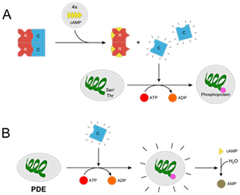
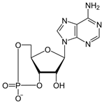
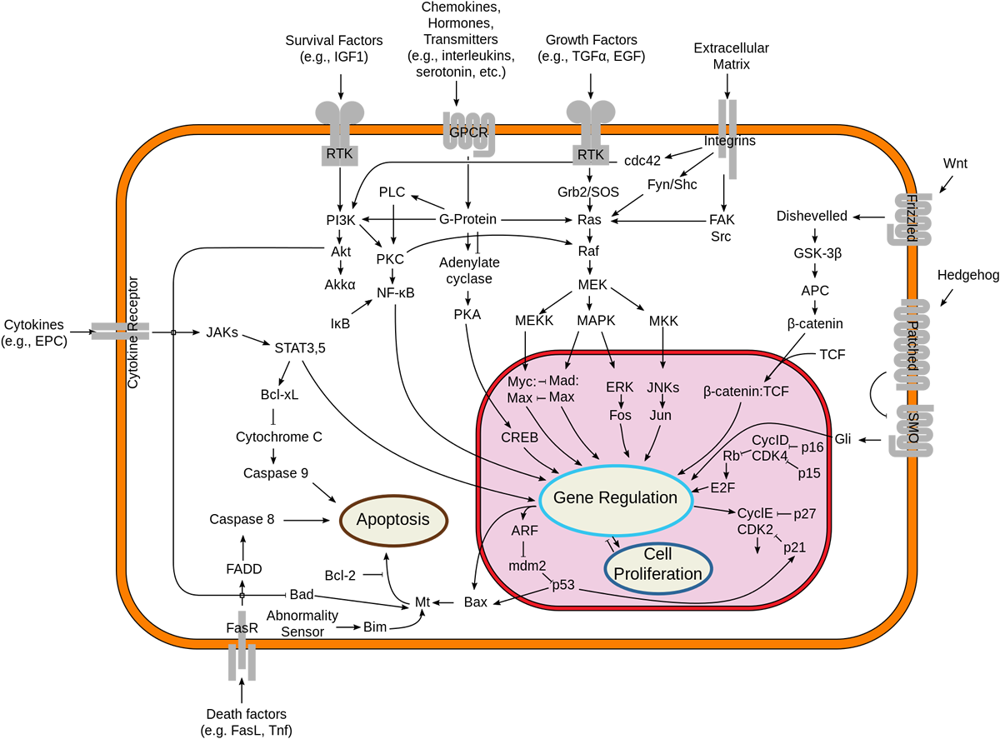

Protein kinase A
1.0 Background
Protein kinase A, more precisely known as adenosine 3',5'-monophosphate (cyclic AMP)-dependent protein kinase was discovered by chemists H. Fischer and Edwin G. Krebs in 1968. They won the Nobel Prize in Physiology or Medicine in 1992 for their work on phosphorylation and dephosphorylation and how it is related to protein kinase A activity. PKA is one of the most widely researched protein kinases, in part because of its uniqueness; out of 540 different protein kinase genes that make up for human kinome, only one other protein kinase, Casein kinase 2, is known to exist in a physiological tetrameric complex. The diversity of mammalian PKA subunits was realized after Dr. Stan Knight and others identified possible four subunit C genes and presence of four R subunit genes. In 1991, Susan Taylor and et al. crystallized the PKA Cα subunit which revealed the bi-lobe structure of the protein kinase core for the very first time, providing a blueprint for all the other protein kinases in a genome ('the kinome').
2.0 Structure
The PKA holoenzyme exists as a tetramer, although higher order structures form in cells, where PKA is targeted to specific components. The classical PKA holoenzyme structure consists of two regulatory subunits and two catalytic subunits. The catalytic subunit contains the active site, a series of canonical residues found in protein kinases that bind and hydrolyse ATP and a domain to bind the regulatory subunit. The regulatory subunit has domains to bind to cyclic AMP, a domain that interacts with catalytic subunit and an auto inhibitory domain. There are two major forms of regulatory subunit; RI and RII.
3.0 Mechanism
3.1 Activation
PKA is also commonly known as cAMP-dependent protein kinase, because it has traditionally been thought to be activated through release of the catalytic subunits when levels of the second messenger cAMP rise in response to a variety of signals. However, recent studies evaluating the intact holoenzyme complexes, including regulatory AKAP-bound signalling complexes, have suggested that the local sub cellular activation of the catalytic activity of PKA might proceed without physical separation of the regulatory and catalytic components, especially at physiological concentrations of cAMP. In contrast, experimentally induced supra physiological concentrations of cAMP are able to cause separation of the holoenzymes, and release of the catalytic subunits. Extracellular hormones such as glucagon and epinephrine begin an intracellular signalling cascade that triggers protein kinase A activation by first binding to a G protein–coupled receptor (GPCR) on the target cell. When a GPCR is activated by its extracellular ligand, a conformational change is induced in the receptor that is transmitted to an attached intracellular heterotrimeric G protein complex by protein domain dynamics. The Gs alpha subunit of the stimulated G protein complex exchanges GDP for GTP and is released from the complex. The activated Gs alpha subunit binds to and activates an enzyme called adenylyl cyclase, which, in turn, catalyzes the conversion of ATP into cyclic adenosine monophosphate (cAMP) – which directly increases cAMP levels. Four cAMP molecules are able to bind to the two R-subunits, this is done by two cAMP molecules binding to each of the two cAMP binding sites (CNB-B and CNB-A) which produces a conformational change in the regulatory subunits on a PKA enzyme causing the subunits to detach and unleashing the two (now activated) catalytic subunits. Once released from their inhibitory Regulatory subunit, the catalytic subunits can go on to phosphorylate a huge number of other proteins in the minimal substrate context Arg-Arg-X-Ser/Thr., although they are still subject to other layers of regulation, include modulation by the heat stable pseudosubstrate inhibitor of PKA, termed PKI.The mechanisms of further effects may be divided into direct protein phosphorylation and protein synthesis:
- Below is a list of the steps involved in PKA activation:
- Cytosolic cAMP increases
- Two cAMP molecules bind to each PKA regulatory subunit
- The regulatory subunits move out of the active sites of the catalytic subunits and the R2C2 complex dissociates
- The free catalytic subunits interact with proteins to phosphorylate Ser or Thr residues.
3.2 Catalysis
The liberated catalytic subunits can then catalyze the transfer of ATP terminal phosphates to protein substrates at serine, or threonine residues. This phosphorylation usually results in a change in activity of the substrate. Since PKAs are present in a variety of cells and act on different substrates, PKA regulation and cAMP regulation are involved in many different pathways. In direct protein phosphorylation, PKA directly either increases or decreases the activity of a protein. In protein synthesis, PKA first directly activates CREB, which binds the cAMP response element, altering the transcription and therefore the synthesis of the protein. In general, this mechanism takes more time (hours to days).
3.3 Phosphorylation mechanism
The Serine/Threonine residue of the substrate peptide is orientated in such a way that the hydroxyl group faces towards the gamma phosphate group of the bound ATP molecule. Both the substrate, ATP, and two Mg2+ ions form intensive contacts with the catalytic subunit of PKA. In the active conformation, the C helix packs against the N-terminal lobe and the Aspartate residue of the conserved DFG motif chelates the Mg2+ ions, assisting in positioning the ATP substrate. The triphosphate group of ATP points out of the adenosine pocket for transfer of gamma-phosphate to the Serine/Threonine of the peptide substrate. There are several conserved residues, include Glutamate (E) 91 and Lysine (K) 72, that mediate the positioning of alpha- and beta-phosphate groups. The hydroxyl group the peptide substrate's Serine/Threonine attacks the gamma phosphate group at the phosphorus via an SN2 nucleophilic reaction, which results in the transfer of the terminal phosphate to the peptide substrate and cleavage of the phosphodiester bond between the beta-phosphate and the gamma-phosphate groups. PKA acts as a model for understanding protein kinase biology, with the position of the conserved residues helping to distinguish the active protein kinase and inactive pseudokinase members of the human kinome.
3.4 Inactivation
Downregulation of protein kinase A occurs by a feedback mechanism uses a number of cAMP hydrolyzing phosphodiesterase enzymes, which is one of the substrates activated by the kinase. Phosphodiesterase quickly converts cAMP to AMP, thus reducing the amount of cAMP that can activate protein kinase A. PKA is also regulated by a complex series of phosphorylation events, which can include modification by autophosphorylation, and phosphorylation by regulatory kinases, such as PDK1 Thus, PKA is controlled, in part, by the levels cAMP. Also, the catalytic subunit itself can be down-regulated by phosphorylation.
3.5 Anchorage
The regulatory subunit dimer of PKA is important for localizing the kinase inside the cell. The dimerization and docking (D/D) domain of the dimer binds to the A-kinase binding (AKB) domain of A-kinase anchor protein (AKAP). The AKAPs localize PKA to various locations (e.g., plasma membrane, mitochondria, etc.) within the cell. AKAPs bind many other signaling proteins, creating a very efficient signaling hub at a certain location within the cell. For example, an AKAP located near the nucleus of a heart muscle cell would bind both PKA and phosphodiesterase (hydrolyzes cAMP), which allows the cell to limit the productivity of PKA, since the catalytic subunit is activated once cAMP binds to the regulatory subunits.
4.0 Function
PKA phosphorylates proteins that have the motif Arginine-Arginine-X-Serine exposed, in turn (de)activating the proteins. As protein expression varies from cell type to cell type, the proteins that are available for phosphorylation will depend upon the cell in which PKA is present. Thus, the effects of PKA activation vary with cell type:
4.1 In adipocytes and hepatocytes
Adrenaline and glucagon affect the activity of protein kinase A by changing the levels of cAMP in a cell via the G-protein mechanism, using adenylate cyclase. Protein kinase A acts to phosphorylate many enzymes important in metabolism. For example, protein kinase A phosphorylates acetyl-CoA carboxylase and pyruvate dehydrogenase. Such covalent modification has an inhibitory effect on these enzymes, thus inhibiting lipogenesis and promoting net gluconeogenesis. Insulin, on the other hand, decreases the level of phosphorylation of these enzymes, which instead promotes lipogenesis. Recall that gluconeogenesis does not occur in myocytes.
4.2 In nucleus accumbens neurons
PKA helps transfer/translate the dopamine signal into cells in the nucleus accumbens, which mediates reward, motivation, and task salience. The vast majority of reward perception involves neuronal activation in the nucleus accumbens, some examples of which include sex, recreational drugs, and food. Protein Kinase A signal transduction pathway helps in modulation of ethanol consumption and its sedative effects. A mouse study reports that mice with genetically reduced cAMP-PKA signalling results into less consumption of ethanol and are more sensitive to its sedative effects.In skeletal muscle Protein Kinase A is directed to specific sub cellular locations after tethering to Protein kinase A anchoring proteins (AKAPs). Sarcoplasmic Reticulum Ca2+ release channel or Ryanodine receptor (Ryr) co-localizes with the muscle AKAP. RyR phosphorylation and efflux of Ca 2+ is increased by localisation of PKA at RyR by mAKP.
4.3 In memory formatiom
PKA has always been considered important in formation of a memory. Reductions in expression activity of DCO (PKA catalytic subunit encoding gene) can cause severe learning disabilities, middle term memory and short-term memory. Long term memory is dependent on the CREB transcription factor, regulated by PKA. A study done on drosophila reported that an increase in PKA activity can affect short term memory. However, a decrease in PKA activity by 24% inhibited learning abilities and a decrease by 16% affected both learning ability and memory retention. Formation of a normal memory is highly sensitive to PKA levels.
Protein kinase B
Protein kinase B (PKB), also known as Akt, is a serine/threonine-specific protein kinase that plays a key role in multiple cellular processes such as glucose metabolism, apoptosis, cell proliferation, transcription and cell migration.
1.0 Family members – Isoforms
Akt1 is involved in cellular survival pathways, by inhibiting apoptotic processes. Akt1 is also able to induce protein synthesis pathways, and is therefore a key signaling protein in the cellular pathways that lead to skeletal muscle hypertrophy, and general tissue growth. Mouse model with complete deletion of Akt1 manifests growth retardation and increased spontaneous apoptosis in tissues such as testes and thymus. Since it can block apoptosis, and thereby promote cell survival, Akt1 has been implicated as a major factor in many types of cancer. Akt (now also called Akt1) was originally identified as the oncogene in the transforming retrovirus, AKT8. Akt2 is an important signaling molecule in the insulin signaling pathway. It is required to induce glucose transport. In a mouse which is null for Akt1 but normal for Akt2, glucose homeostasis is unperturbed, but the animals are smaller, consistent with a role for Akt1 in growth. In contrast, mice which do not have Akt2, but have normal Akt1, have mild growth deficiency and display a diabetic phenotype (insulin resistance), again consistent with the idea that Akt2 is more specific for the insulin receptor signaling pathway. Akt isoforms are overexpressed in a variety of human tumors, and, at the genomic level, are amplified in gastric adenocarcinomas (Akt1), ovarian (Akt2), pancreatic (Akt2) and breast (Akt2) cancer. The role of Akt3 is less clear, though it appears to be predominantly expressed in the brain. It has been reported that mice lacking Akt3 have small brains.
2.0 Name
The name Akt does not refer to its function. The "Ak" in Akt was a temporary classification name for a mouse bred and maintained by Jacob Furth that developed spontaneous thymic lymphomas. The "t" stands for 'thymoma'; the letter was added when a transforming retrovirus was isolated from the Ak strain, which was termed "Akt-8". When the oncogene encoded in this virus was discovered, it was termed v-Akt. Thus, the later identified human analogues were named accordingly.
3.0 Regulation
3.1 Binding phospholipids
Akt possesses a protein domain known as a PH domain, or Pleckstrin Homology domain, named after Pleckstrin, the protein in which it was first discovered. This domain binds to phosphoinositides with high affinity. In the case of the PH domain of Akt, it binds either PIP3 (phosphatidylinositol (3,4,5)-trisphosphate, PtdIns(3,4,5)P3) or PIP2 (phosphatidylinositol (3,4)-bisphosphate, PtdIns(3,4)P2). This is useful for control of cellular signaling because the di-phosphorylated phosphoinositide PIP2 is only phosphorylated by the family of enzymes, PI 3-kinases (phosphoinositide 3-kinase or PI3-K), and only upon receipt of chemical messengers which tell the cell to begin the growth process. For example, PI 3-kinases may be activated by a G protein coupled receptor or receptor tyrosine kinase such as the insulin receptor. Once activated, PI 3-kinase phosphorylates PIP2 to form PIP3.
3.2 Phosphorylation
Once correctly positioned at the membrane via binding of PIP3, Akt can then be phosphorylated by its activating kinases, phosphoinositide dependent kinase 1 (PDPK1 at threonine 308) and the mammalian target of rapamycin complex 2 (mTORC2 at serine 473), first by mTORC2. mTORC2 therefore functionally acts as the long-sought PDK2 molecule, although other molecules, including integrin-linked kinase (ILK) and mitogen-activated protein kinase-activated protein kinase-2 (MAPKAPK2) can also serve as PDK2. Phosphorylation by mTORC2 stimulates the subsequent phosphorylation of Akt by PDPK1. Activated Akt can then go on to activate or deactivate its myriad substrates (e.g. mTOR) via its kinase activity. Besides being a downstream effector of PI 3-kinases, Akt can also be activated in a PI 3-kinase-independent manner. ACK1 or TNK2, a non-receptor tyrosine kinase, phosphorylates Akt at its tyrosine 176 residue, leading to its activation in PI 3-kinase-independent manner. Studies have suggested that cAMP-elevating agents could also activate Akt through protein kinase A (PKA) in the presence of insulin.
3.3 Ubiquitination
Akt is normally phosphorylated at position T450 in the turn motif when Akt is translated. If Akt is not phosphorylated at this position, Akt does not fold in the right way. The T450-non-phosphorylated misfolded Akt is ubiquitinated and degraded by the proteasome. Akt is also phosphorylated at T308 and S473 during IGF-1 response, and the resulting polyphosphorylated Akt is ubiquitinated partly by E3 ligase NEDD4. Most of the ubiquitinated-phosphorylated-Akt is degraded by the proteasome, while a small amount of phosphorylated-Akt translocates to the nucleus in a ubiquitination-dependent way to phosphorylate its substrate. A cancer-derived mutant Akt (E17K) is more readily ubiquitinated and phosphorylated than the wild type Akt. The ubiquitinated-phosphorylated-Akt (E17K) translocates more efficiently to the nucleus than the wild type Akt. This mechanism may contribute to E17K-Akt-induced cancer in humans.
3.4 Lipid phosphatases and PIP3
PI3K-dependent Akt activation can be regulated through the tumor suppressor PTEN, which works essentially as the opposite of PI3K mentioned above. PTEN acts as a phosphatase to dephosphorylate PIP3 back to PIP2. This removes the membrane-localization factor from the Akt signaling pathway. Without this localization, the rate of Akt activation decreases significantly, as do all of the downstream pathways that depend on Akt for activation.PIP3 can also be de-phosphorylated at the "5" position by the SHIP family of inositol phosphatases, SHIP1 and SHIP2. These poly-phosphate inositol phosphatases dephosphorylate PIP3 to form PIP2.
3.5 Protein phosphatases
The phosphatases in the PHLPP family, PHLPP1 and PHLPP2 have been shown to directly de-phosphorylate, and therefore inactivate, distinct Akt isoforms. PHLPP2 dephosphorylates Akt1 and Akt3, whereas PHLPP1 is specific for Akt 2 and Akt3.
4.0 Function
Akt regulates cellular survival and metabolism by binding and regulating many downstream effectors, e.g. Nuclear Factor-κB, Bcl-2 family proteins, master lysosomal regulator TFEB and murine double minute 2 (MDM2).
4.1 Cell survival
Akt could promote growth factor-mediated cell survival both directly and indirectly. BAD is a pro-apoptotic protein of the Bcl-2 family. Akt could phosphorylate BAD on Ser136, which makes BAD dissociate from the Bcl-2/Bcl-X complex and lose the pro-apoptotic function. Akt could also activate NF-κB via regulating IκB kinase (IKK), thus result in transcription of pro-survival genes.
4.2 Cell cycle
Akt is known to play a role in the cell cycle. Under various circumstances, activation of Akt was shown to overcome cell cycle arrest in G1 and G2 phases. Moreover, activated Akt may enable proliferation and survival of cells that have sustained a potentially mutagenic impact and, therefore, may contribute to acquisition of mutations in other genes.
4.3 Metabolism
Akt2 is required for the insulin-induced translocation of glucose transporter 4 (GLUT4) to the plasma membrane. Glycogen synthase kinase 3 (GSK-3) could be inhibited upon phosphorylation by Akt, which results in increase of glycogen synthesis. GSK3 is also involved in Wnt signaling cascade, so Akt might be also implicated in the Wnt pathway. Still unknown role in HCV induced steatosis.
4.4 Lysosomal biogenesis and autophagy
Akt regulates TFEB, a master controller of lysosomal biogenesis, by direct phosphorylation at serine 467. Phosphorylated TFEB is excluded from the nucleus and less active. Pharmacological inhibition of Akt promotes nuclear translocation of TFEB, lysosomal biogenesis and autophagy.
4.5 Angiogenesis
Akt1 has also been implicated in angiogenesis and tumor development. Although deficiency of Akt1 in mice inhibited physiological angiogenesis, it enhanced pathological angiogenesis and tumor growth associated with matrix abnormalities in skin and blood vessels.
5.0 Clinical relevance
Akt is associated with tumor cell survival, proliferation, and invasiveness. The activation of Akt is also one of the most frequent alterations observed in human cancer and tumor cells. Tumor cells that have constantly active Akt may depend on Akt for survival. Therefore, understanding Akt and its pathways is important for the creation of better therapies to treat cancer and tumor cells. A mosaic-activating mutation (c. 49G→A, p.Glu17Lys) in AKT1 is associated with the Proteus Syndrome, which causes overgrowth of skin, connective tissue, brain and other tissues.
5.1 AKT inhibitors
Because of the Akt functions above, Akt inhibitors may treat cancers such as neuroblastoma. Some Akt inhibitors have undergone clinical trials. In 2007 VQD-002 had a phase I trial. In 2010 Perifosine reached phase II. but it failed phase III in 2012.Miltefosine is approved for leishmaniasis and under investigation for other indications including HIV. AKT is now thought to be the "key" for cell entry by HSV-1 and HSV-2 (herpes virus: oral and genital, respectively). Intracellular calcium release by the cell allows for entry by the herpes virus; the virus activates AKT, which in turn causes the release of calcium. Treating the cells with AKT inhibitors before virus exposure leads to a significantly lower rate of infection. MK-2206 reported phase 1 results for advanced solid tumors in 2011, and subsequently has undergone numerous phase II studies for a wide variety of cancer types.In 2013 AZD5363 reported phase I results regarding solid tumors with a study of AZD5363 with olaparib reporting in 2016. A new type of Akt inhibitor has been discovered. Ipatasertib is in phase II trials for breast cancer.
5.2 Decreased AKT can cause deleterious effects
AKT activation is associated with many malignancies; however, a research group from Massachusetts General Hospital and Harvard University unexpectedly observed a converse role for AKT and one of its downstream effector FOXOs in acute myeloid leukemia (AML). They claimed that low levels of AKT activity associated with elevated levels of FOXOs are required to maintain the function and immature state of leukemia-initiating cells (LICs). FOXOs are active, implying reduced Akt activity, in ∼40% of AML patient samples regardless of genetic subtype; and either activation of Akt or compound deletion of FoxO1/3/4 reduced leukemic cell growth in a mouse model.
5.3 Hyperactivation of AKT can cause deleterious effects
Two recent studies show that AKT1 is involved in Juvenile Granulosa Cell tumors (JGCT). In-frame duplications in the pleckstrin-homology domain (PHD) of the protein were found in more than 60% of JGCTs occurring in girls under 15 years of age. Interestingly, the JGCTs without duplications carried point mutations affecting highly conserved residues. The mutated proteins carrying the duplications displayed a non-wild-type subcellular distribution, with a marked enrichment at the plasma membrane. This led to a striking degree of AKT1 activation demonstrated by a strong phosphorylation level and corroborated by reporter assays. Analysis by RNA-Seq pinpointed a series of differentially expressed genes, involved in cytokine and hormone signaling and cell division-related processes. Further analyses pointed to a possible dedifferentiation process and suggested that most of the transcriptomic dysregulations might be mediated by a limited set of transcription factors perturbed by AKT1 activation. These results incriminate somatic mutations of AKT1 as major probably driver events in the pathogenesis of JGCTs.
Protein kinase C
Protein kinase C, commonly abbreviated to PKC (EC 2.7.11.13), is a family of protein kinase enzymes that are involved in controlling the function of other proteins through the phosphorylation of hydroxyl groups of serine and threonine amino acid residues on these proteins, or a member of this family. PKC enzymes in turn are activated by signals such as increases in the concentration of diacylglycerol (DAG) or calcium ions (Ca2+). Hence PKC enzymes play important roles in several signal transduction cascades. The PKC family consists of fifteen isozymes in humans. They are divided into three subfamilies, based on their second messenger requirements: conventional (or classical), novel, and atypical. Conventional (c)PKCs contain the isoforms α, βI, βII, and γ. These require Ca2+, DAG, and a phospholipid such as phosphatidylserine for activation. Novel (n)PKCs include the δ, ε, η, and θ isoforms, and require DAG, but do not require Ca2+ for activation. Thus, conventional and novel PKCs are activated through the same signal transductionpathway as phospholipase C. On the other hand, atypical (a)PKCs (including protein kinase Mζ and ι / λ isoforms) require neither Ca2+ nor diacylglycerol for activation. The term "protein kinase C" usually refers to the entire family of isoforms.
1.0 Structure
The structure of all PKCs consists of a regulatory domain and a catalytic domain tethered together by a hinge region. The catalytic region is highly conserved among the different isoforms, as well as, to a lesser degree, among the catalytic region of other serine/threonine kinases. The second messenger requirement differences in the isoforms are a result of the regulatory region, which are similar within the classes, but differ among them. Most of the crystal structure of the catalytic region of PKC has not been determined, except for PKC theta and iota. Due to its similarity to other kinases whose crystal structure have been determined, the structure can be strongly predicted.
1.1 Regulatory
The regulatory domain or the amino-teminus of the PKCs contains several shared subregions. The C1 domain, present in all of the isoforms of PKC has a binding site for DAG as well as non-hydrolysable, non-physiological analogues called phorbol esters. This domain is functional and capable of binding DAG in both conventional and novel isoforms, however, the C1 domain in atypical PKCs is incapable of binding to DAG or phorbol esters. The C2 domain acts as a Ca2+ sensor and is present in both conventional and novel isoforms, but functional as a Ca2+ sensor only in the conventional. The pseudosubstrate region, which is present in all three classes of PKC, is a small sequence of amino acids that mimic a substrate and bind the substrate-binding cavity in the catalytic domain,lack critical serine, threonine phosphoacceptor residues, keeping the enzyme inactive. When Ca2+ and DAG are present in sufficient concentrations, they bind to the C2 and C1 domain, respectively, and recruit PKC to the membrane. This interaction with the membrane results in release of the pseudosubstrate from the catalytic site and activation of the enzyme. In order for these allosteric interactions to occur, however, PKC must first be properly folded and in the correct conformation permissive for catalytic action. This is contingent upon phosphorylation of the catalytic region, discussed below.
1.2 Catalytic
The catalytic region or kinase core of the PKC allows for different functions to be processed; PKB (also known as Akt) and PKC kinases contains approximately 40% amino acid sequence similarity. This similarity increases to ~ 70% across PKCs and even higher when comparing within classes. For example, the two atypical PKC isoforms, ζ and ι/λ, are 84% identical (Selbie et al., 1993). Of the over-30 protein kinase structures whose crystal structure has been revealed, all have the same basic organization. They are a bilobal structure with a β sheet comprising the N-terminal lobe and an α helix constituting the C-terminal lobe. Both the ATP- and substrate-binding sites are located in the cleft formed by these two lobes. This is also where the pseudosubstrate domain of the regulatory region binds.[] Another feature of the PKC catalytic region that is essential to the viability of the kinase is its phosphorylation. The conventional and novel PKCs have three phosphorylation sites, termed: the activation loop, the turn motif, and the hydrophobic motif. The atypical PKCs are phosphorylated only on the activation loop and the turn motif. Phosphorylation of the hydrophobic motif is rendered unnecessary by the presence of a glutamic acid in place of a serine, which, as a negative charge, acts similar in manner to a phosphorylated residue. These phosphorylation events are essential for the activity of the enzyme, and 3-phosphoinositide-dependent protein kinase-1 (PDK1) is the upstream kinase responsible for initiating the process by transphosphorylation of the activation loop. The consensus sequence of protein kinase C enzymes is similar to that of protein kinase A, since it contains basic amino acids close to the Ser/Thr to be phosphorylated. Their substrates are, e.g., MARCKS proteins, MAP kinase, transcription factor inhibitor IκB, the vitamin D3 receptor VDR, Raf kinase, calpain, and the epidermal growth factor receptor.
2.0 Activation
Upon activation, protein kinase C enzymes are translocated to the plasma membrane by RACK proteins (membrane-bound receptor for activated protein kinase C proteins). The protein kinase C enzymes are known for their long-term activation: They remain activated after the original activation signal or the Ca2+-wave is gone. It is presumed that this is achieved by the production of diacylglycerol from phosphatidylinositol by a phospholipase; fatty acids may also play a role in long-term activation.
3.0 Function
A multiplicity of functions has been ascribed to PKC. Recurring themes are that PKC is involved in receptor desensitization, in modulating membrane structure events, in regulating transcription, in mediating immune responses, in regulating cell growth, and in learning and memory. These functions are achieved by PKC-mediated phosphorylation of other proteins. However, the substrate proteins present for phosphorylation vary, since protein expression is different between different kinds of cells. Thus, effects of PKC are cell-type-specific:
Cell type |
Organ/system |
Effects |
|
contraction |
|||
smooth muscle cells in: iris dilator muscle (sensory system) urethral sphincter (urinary system) |
Various |
contraction |
|
smooth muscle cells in: |
contraction |
||
smooth muscle cell (vascular) |
5-HT --> 5-HT2A receptor |
||
smooth muscle cell (seminal tract) |
|||
smooth muscle cell (GI tract) |
5-HT --> 5-HT2A or 5-HT2B receptor acetylcholine (ACh) --> M3 receptor |
contraction |
|
smooth muscle cell (bronchi) |
5-HT --> 5-HT2A receptor adrenergic agonists --> β₂ receptor acetylcholine --> M3[12] and M1 receptor[13] |
||
stimulate NHE3 --> H+ secretion & Na+ reabsorption[14] stimulate basolateral Na-K ATPase --> Na+ reabsorption |
|||
5-HT --> 5-HT2A receptor |
neuronal excitation (5-HT) memory (glutamate) |
||
5-HT --> 5-HT2A receptor |
aggregation |
||
5-HT --> 5-HT2C receptor |
↑cerebrospinal fluid secretion |
||
positive ionotropic effect |
|||
acetylcholine --> M1 and M3 receptors |
↑secretion salivary potassium levels. |
||
↑secretion |
|||
sweat gland cells |
↑secretion |
||
↑ gastric acid secretion |
4.0 Pathology
Protein kinase C, activated by tumor promoter phorbol ester, may phosphorylate potent activators of transcription, and thus lead to increased expression of oncogenes, promoting cancer progression, or interfere with other phenomena.
4.1 Inhibitors
Protein kinase C inhibitors, such as ruboxistaurin, may potentially be beneficial in peripheral diabetic nephropathy. Chelerythrine is a natural selective PKC inhibitor. Other naturally occurring PKCIs are miyabenol C, myricitrin, gossypol. Other PKCIs : Verbascoside, BIM-1. Bryostatin 1 can act as a PKC inhibitor; It was investigated for cancer.
4.2 Activators
The Protein kinase C activator ingenol mebutate, derived from the plant Euphorbia peplus, is FDA-approved for the treatment of actinic keratosis. Bryostatin 1 can act as a PKCe activator and as of 2016 is being investigated for Alzheimer's disease.